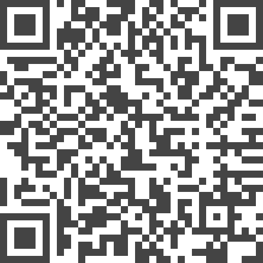

Toward a Deeper Understanding of Visualization Through Keyword Analysis | HCI Stuttgart

Authors. Petra Isenberg, Tobias Isenberg, Michael Sedlmair, Jian Chen, Torsten Möller
Venue. arXiv (2014)
Abstract. We present the results of a comprehensive analysis of visualization paper keywords supplied for 4366 papers submitted to five main visualization conferences. We describe main keywords, topic areas, and 10-year historic trends from two datasets: (1) the standardized PCS taxonomy keywords in use for paper submissions for IEEE InfoVis, IEEE Vis-SciVis, IEEE VAST, EuroVis, and IEEE PacificVis since 2009 and (2) the author-chosen keywords for papers published in the IEEE Visualization conference series (now called IEEE VIS) since 2004. Our analysis of research topics in visualization can serve as a starting point to (a) help create a common vocabulary to improve communication among different visualization sub-groups, (b) facilitate the process of understanding differences and commonalities of the various research sub-fields in visualization, (c) provide an understanding of emerging new research trends, (d) facilitate the crucial step of finding the right reviewers for research submissions, and (e) it can eventually lead to a comprehensive taxonomy of visualization research. One additional tangible outcome of our work is an application that allows visualization researchers to easily browse the 2600+ keywords used for IEEE VIS papers during the past 10 years, aiming at more informed and, hence, more effective keyword selections for future visualization publications.
